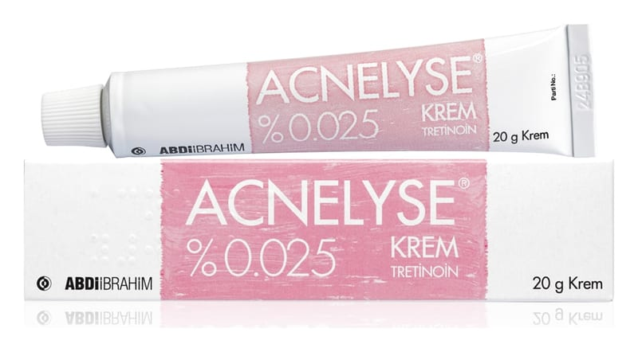

Acnelyse %0.025 Krem, 20 Gram

Ne için kullanılır
KT · Bölüm 1ACNELYSE, etkin madde olarak retinoik asit (tretinoin) içerir.
ACNELYSE’in etkin maddesi olan retinoik asit (tretinoin), deriye uygulandığında derinin en üst tabakası olan epidermise ait hücrelerin yenilenmesini uyarır, aşırı keratin oluşumunu baskılar ve derinin kendisini onarma mekanizmalarını uyarır.
Cilt tarafından kolaylıkla kabul edilen özel bir krem bazı içinde formüle edilmiş olan ACNELYSE, bu özelliklerinden ötürü ciltteki kan dolaşımını düzenler, gözeneklerin sıkışmasını sağlayarak cilt dokusunu güçlendirir. Ayrıca derideki kolajen üretimini uyarır ve cildin en üst tabakasını sıkıştırıp inceltir.
ACNELYSE, 20 gram’lık alüminyum tüplerde sunulur.
ACNELYSE, açık sarı renkte, homojen krem formundadır.
Bu özellikleri sayesinde ACNELYSE, çeşitli deri lezyonları şeklinde kendini gösteren akne vulgaris (sivilce) tedavisinde kullanılır.
ACNELYSE, kapsamlı cilt bakımı ve güneş ışığından kaçınma rutini uygulayanlarda ince yüz kırışıklıklarının hafifletilmesinde ek tedavi olarak kullanılır.